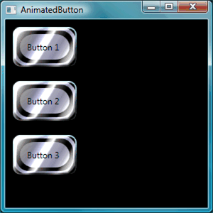
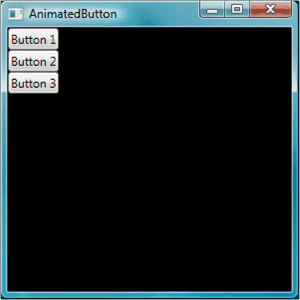
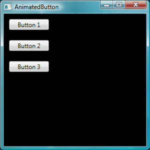
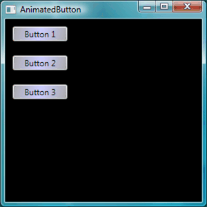
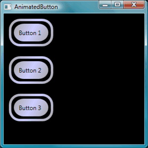

Пошаговое руководство. Создание кнопки с помощью XAML
Цель этого пошагового руководства — сведения о создании анимированной кнопки для использования в приложении Windows Presentation Foundation (WPF). В этом пошаговом руководстве используется стиль и шаблон для создания ресурса пользовательской кнопки, которая позволяет повторно использовать код и разделять логику от объявления кнопки. В этом пошаговом руководстве приведено полностью в Язык XAML.
Important
В этом пошаговом руководстве поможет выполнить шаги для создания приложения путем ввода или копирования и вставки Язык XAML в Microsoft Visual Studio. Если вы предпочитаете, чтобы научиться использовать это средство разработки (Microsoft Expression Blend) для создания того же приложения, см. в разделе Создание кнопки с помощью Microsoft Expression Blend.
Ниже показаны созданные кнопки.

Создание простых кнопок
Давайте начнем с создания проекта и добавления нескольких кнопок в окно.
Чтобы создать новый проект WPF и добавление кнопок в окно
Запустите Visual Studio.
Создайте новый проект WPF: В меню Файл выберите пункт Создать, а затем команду Проект. Найти приложения Windows (WPF) шаблон и имя проекта «AnimatedButton». Будет создан каркас для приложения.
Добавление кнопок basic по умолчанию: Все файлы, необходимые для этого пошагового руководства предоставленный шаблоном. Откройте файл Window1.xaml, дважды щелкнув его в обозревателе решений. По умолчанию — Grid элемент в файле Window1.xaml. Удалить Grid элемент и добавьте несколько кнопок на Язык XAML странице введите или скопируйте и вставьте следующий выделенный код в Window1.xaml:
<Window x:Class="AnimatedButton.Window1" xmlns="http://schemas.microsoft.com/winfx/2006/xaml/presentation" xmlns:x="http://schemas.microsoft.com/winfx/2006/xaml" Title="AnimatedButton" Height="300" Width="300" Background="Black"> <!-- Buttons arranged vertically inside a StackPanel. --> <StackPanel HorizontalAlignment="Left"> <Button>Button 1</Button> <Button>Button 2</Button> <Button>Button 3</Button> </StackPanel> </Window>Нажмите клавишу F5 для запуска приложения; Вы должны увидеть набор кнопок, который выглядит как на следующем рисунке.

Теперь, когда вы создали основные кнопки, вы закончили работу в файле Window1.xaml. Остальная часть пошагового руководства посвящена файл app.xaml, определение стилей и шаблонов для кнопок.
Набор основных свойств
Далее зададим некоторые свойства этих кнопок для управления макет и внешний вид кнопки. Вместо того чтобы задавать свойства кнопок по отдельности, будут использовать ресурсы для определения свойств кнопки для всего приложения. Ресурсы приложений похожи на внешние Каскадные таблицы стилей (CSS) для веб-страниц; Однако ресурсы являются гораздо эффективнее, чем Каскадные таблицы стилей (CSS), как можно будет увидеть в конце этого пошагового руководства. Дополнительные сведения о ресурсах см. в разделе ресурсы XAML.
Чтобы использовать стили для задания основных свойств на кнопках
Определение блока Application.Resources: Откройте файл app.xaml и добавьте выделенную ниже разметку в том случае, если он еще не выбран.
<Application x:Class="AnimatedButton.App" xmlns="http://schemas.microsoft.com/winfx/2006/xaml/presentation" xmlns:x="http://schemas.microsoft.com/winfx/2006/xaml" StartupUri="Window1.xaml" > <Application.Resources> <!-- Resources for the entire application can be defined here. --> </Application.Resources> </Application>Область ресурса определяется определяется ресурс. Определение ресурсов в
Application.Resourcesв app.xaml файл позволяет ресурсов для использования в любом месте в приложении. Дополнительные сведения об определении области ресурсов, см. в разделе ресурсы XAML.Создать стиль и определите значения основных свойств с ним: Добавьте следующую разметку для
Application.Resourcesблока. Эта разметка создает Style , применимый ко всем кнопкам в приложении, устанавливая Width кнопок на 90 и Margin до 10:<Application.Resources> <Style TargetType="Button"> <Setter Property="Width" Value="90" /> <Setter Property="Margin" Value="10" /> </Style> </Application.Resources>TargetType Свойство указывает, что стиль применяется ко всем объектам данного типа Button. Каждый Setter задает другое значение свойства для Style. Таким образом на этом этапе все кнопки в приложении имеет шириной равной 90 и границей 10. Если нажать клавишу F5, чтобы запустить приложение, вы увидите следующее окно.

Нет, можно сделать с помощью стилей, включая различные способы настройки целевых объектов, указание сложных значений свойств и даже использование стилей в качестве входных данных для других стилей гораздо больше. Более подробную информацию см. в разделе Стилизация и использование шаблонов.
Задайте значение свойства стиля для ресурса: Ресурсы позволяют легко повторное использование часто определяемых объектов и значений. Это особенно полезно для определения сложных значений, использование ресурсов, чтобы сделать код более удобным. Добавьте выделенную ниже разметку в файл app.xaml.
<Application.Resources> <LinearGradientBrush x:Key="GrayBlueGradientBrush" StartPoint="0,0" EndPoint="1,1"> <GradientStop Color="DarkGray" Offset="0" /> <GradientStop Color="#CCCCFF" Offset="0.5" /> <GradientStop Color="DarkGray" Offset="1" /> </LinearGradientBrush> <Style TargetType="{x:Type Button}"> <Setter Property="Background" Value="{StaticResource GrayBlueGradientBrush}" /> <Setter Property="Width" Value="80" /> <Setter Property="Margin" Value="10" /> </Style> </Application.Resources>Непосредственно под
Application.Resourcesблок, вы создали ресурс называется «GrayBlueGradientBrush». Этот ресурс определяет горизонтальный градиент. Этот ресурс может использоваться в качестве значения свойства из любого места в приложении, в том числе внутри метода задания стиля кнопки для Background свойство. Теперь все кнопки имеют Background значение свойства для этого градиента.Нажмите клавишу F5 для запуска приложения. Он должен выглядеть следующим образом.

Создать шаблон, который определяет внешний вид кнопки
В этом разделе создается шаблон, который настраивает внешний вид (presentation) кнопки. Представление кнопки состоит из нескольких объектов, включая прямоугольники и другие компоненты для предоставления уникального внешнего вида кнопки.
На данный момент элемент управления видом кнопок в приложении выполнялось с изменение свойств кнопки. Что делать, если вы хотите сделать кардинально изменить внешний вид кнопки? Шаблоны обеспечивают мощный управления представлением объекта. Поскольку шаблоны можно использовать в стилях, шаблон можно применить ко всем объектам, к которым применяется стиль, чтобы (в этом пошаговом руководстве, кнопки).
Чтобы использовать шаблон для определения внешнего вида кнопки
Настройка шаблона: Так как элементы управления, такие как Button имеют Template можно определить значение свойства шаблона так же, как и другие значения свойств, мы задали в Style с помощью Setter. Добавьте выделенную ниже разметку в стиль кнопки.
<Application.Resources> <LinearGradientBrush x:Key="GrayBlueGradientBrush" StartPoint="0,0" EndPoint="1,1"> <GradientStop Color="DarkGray" Offset="0" /> <GradientStop Color="#CCCCFF" Offset="0.5" /> <GradientStop Color="DarkGray" Offset="1" /> </LinearGradientBrush> <Style TargetType="{x:Type Button}"> <Setter Property="Background" Value="{StaticResource GrayBlueGradientBrush}" /> <Setter Property="Width" Value="80" /> <Setter Property="Margin" Value="10" /> <Setter Property="Template"> <Setter.Value> <!-- The button template is defined here. --> </Setter.Value> </Setter> </Style> </Application.Resources>Презентация кнопку ALTER. На этом этапе необходимо определить шаблон. Добавьте выделенную ниже разметку. Эта разметка задает два Rectangle элементов при помощи прямоугольника с закругленными углами, за которым следует DockPanel. DockPanel Используется для размещения ContentPresenter кнопки. Объект ContentPresenter отображает содержимое кнопки. В этом пошаговом руководстве содержимым является текст («Кнопку 1», «Button 2», «Button 3»). Все компоненты шаблона (прямоугольников и DockPanel) располагаются внутри Grid.
<Setter.Value> <ControlTemplate TargetType="Button"> <Grid Width="{TemplateBinding Width}" Height="{TemplateBinding Height}" ClipToBounds="True"> <!-- Outer Rectangle with rounded corners. --> <Rectangle x:Name="outerRectangle" HorizontalAlignment="Stretch" VerticalAlignment="Stretch" Stroke="{TemplateBinding Background}" RadiusX="20" RadiusY="20" StrokeThickness="5" Fill="Transparent" /> <!-- Inner Rectangle with rounded corners. --> <Rectangle x:Name="innerRectangle" HorizontalAlignment="Stretch" VerticalAlignment="Stretch" Stroke="Transparent" StrokeThickness="20" Fill="{TemplateBinding Background}" RadiusX="20" RadiusY="20" /> <!-- Present Content (text) of the button. --> <DockPanel Name="myContentPresenterDockPanel"> <ContentPresenter x:Name="myContentPresenter" Margin="20" Content="{TemplateBinding Content}" TextBlock.Foreground="Black" /> </DockPanel> </Grid> </ControlTemplate> </Setter.Value>Нажмите клавишу F5 для запуска приложения. Он должен выглядеть следующим образом.

Добавление прозрачности в шаблон: Далее добавим прозрачного стекла. Сначала создайте ресурсы, которые создают эффект градиента прозрачности. Добавьте эти градиентные ресурсы в любом месте в пределах
Application.Resourcesблок:<Application.Resources> <GradientStopCollection x:Key="MyGlassGradientStopsResource"> <GradientStop Color="WhiteSmoke" Offset="0.2" /> <GradientStop Color="Transparent" Offset="0.4" /> <GradientStop Color="WhiteSmoke" Offset="0.5" /> <GradientStop Color="Transparent" Offset="0.75" /> <GradientStop Color="WhiteSmoke" Offset="0.9" /> <GradientStop Color="Transparent" Offset="1" /> </GradientStopCollection> <LinearGradientBrush x:Key="MyGlassBrushResource" StartPoint="0,0" EndPoint="1,1" Opacity="0.75" GradientStops="{StaticResource MyGlassGradientStopsResource}" /> <!-- Styles and other resources below here. -->Эти ресурсы используются в качестве Fill для прямоугольника, который вставляется в Grid шаблона кнопки. Добавьте выделенную ниже разметку в шаблон.
<Setter.Value> <ControlTemplate TargetType="{x:Type Button}"> <Grid Width="{TemplateBinding Width}" Height="{TemplateBinding Height}" ClipToBounds="True"> <!-- Outer Rectangle with rounded corners. --> <Rectangle x:Name="outerRectangle" HorizontalAlignment="Stretch" VerticalAlignment="Stretch" Stroke="{TemplateBinding Background}" RadiusX="20" RadiusY="20" StrokeThickness="5" Fill="Transparent" /> <!-- Inner Rectangle with rounded corners. --> <Rectangle x:Name="innerRectangle" HorizontalAlignment="Stretch" VerticalAlignment="Stretch" Stroke="Transparent" StrokeThickness="20" Fill="{TemplateBinding Background}" RadiusX="20" RadiusY="20" /> <!-- Glass Rectangle --> <Rectangle x:Name="glassCube" HorizontalAlignment="Stretch" VerticalAlignment="Stretch" StrokeThickness="2" RadiusX="10" RadiusY="10" Opacity="0" Fill="{StaticResource MyGlassBrushResource}" RenderTransformOrigin="0.5,0.5"> <Rectangle.Stroke> <LinearGradientBrush StartPoint="0.5,0" EndPoint="0.5,1"> <LinearGradientBrush.GradientStops> <GradientStop Offset="0.0" Color="LightBlue" /> <GradientStop Offset="1.0" Color="Gray" /> </LinearGradientBrush.GradientStops> </LinearGradientBrush> </Rectangle.Stroke> <!-- These transforms have no effect as they are declared here. The reason the transforms are included is to be targets for animation (see later). --> <Rectangle.RenderTransform> <TransformGroup> <ScaleTransform /> <RotateTransform /> </TransformGroup> </Rectangle.RenderTransform> <!-- A BevelBitmapEffect is applied to give the button a "Beveled" look. --> <Rectangle.BitmapEffect> <BevelBitmapEffect /> </Rectangle.BitmapEffect> </Rectangle> <!-- Present Text of the button. --> <DockPanel Name="myContentPresenterDockPanel"> <ContentPresenter x:Name="myContentPresenter" Margin="20" Content="{TemplateBinding Content}" TextBlock.Foreground="Black" /> </DockPanel> </Grid> </ControlTemplate> </Setter.Value>Обратите внимание, что Opacity прямоугольника с
x:Nameсвойство «glassCube» задано значение 0, поэтому при запуске примера, вы не видите прозрачного прямоугольника в верхней части. Это так, как мы позже добавим триггеры в шаблон для взаимодействия пользователя с помощью кнопки. Тем не менее, можно увидеть, что кнопка выглядит, как теперь, изменив Opacity значение 1 и запуска приложения. См. следующий рисунок. Прежде чем переходить к следующему шагу, изменить Opacity значение 0.
Создать интерактивную кнопку
В этом разделе вы создадите свойство триггеров и триггеров событий для изменения значений свойств и выполнения анимации в ответ на действия пользователя, таких как Наведение указателя мыши на кнопку и нажав кнопку.
Простой способ добавления интерактивности (Наведение указателя мыши, оставьте мыши, нажмите кнопку и т. д.) является определение триггеров в шаблоне или стиле. Чтобы создать Trigger, вы определяете свойство «условие», такие как: Кнопки IsMouseOver значение свойства равно true. Затем предстоит методов задания (действия), которые выполняются, если условие триггера истинно.
Чтобы создать интерактивную кнопку
Добавление триггеров шаблона: Добавьте выделенную разметку в шаблон.
<Setter.Value> <ControlTemplate TargetType="{x:Type Button}"> <Grid Width="{TemplateBinding Width}" Height="{TemplateBinding Height}" ClipToBounds="True"> <!-- Outer Rectangle with rounded corners. --> <Rectangle x:Name="outerRectangle" HorizontalAlignment="Stretch" VerticalAlignment="Stretch" Stroke="{TemplateBinding Background}" RadiusX="20" RadiusY="20" StrokeThickness="5" Fill="Transparent" /> <!-- Inner Rectangle with rounded corners. --> <Rectangle x:Name="innerRectangle" HorizontalAlignment="Stretch" VerticalAlignment="Stretch" Stroke="Transparent" StrokeThickness="20" Fill="{TemplateBinding Background}" RadiusX="20" RadiusY="20" /> <!-- Glass Rectangle --> <Rectangle x:Name="glassCube" HorizontalAlignment="Stretch" VerticalAlignment="Stretch" StrokeThickness="2" RadiusX="10" RadiusY="10" Opacity="0" Fill="{StaticResource MyGlassBrushResource}" RenderTransformOrigin="0.5,0.5"> <Rectangle.Stroke> <LinearGradientBrush StartPoint="0.5,0" EndPoint="0.5,1"> <LinearGradientBrush.GradientStops> <GradientStop Offset="0.0" Color="LightBlue" /> <GradientStop Offset="1.0" Color="Gray" /> </LinearGradientBrush.GradientStops> </LinearGradientBrush> </Rectangle.Stroke> <!-- These transforms have no effect as they are declared here. The reason the transforms are included is to be targets for animation (see later). --> <Rectangle.RenderTransform> <TransformGroup> <ScaleTransform /> <RotateTransform /> </TransformGroup> </Rectangle.RenderTransform> <!-- A BevelBitmapEffect is applied to give the button a "Beveled" look. --> <Rectangle.BitmapEffect> <BevelBitmapEffect /> </Rectangle.BitmapEffect> </Rectangle> <!-- Present Text of the button. --> <DockPanel Name="myContentPresenterDockPanel"> <ContentPresenter x:Name="myContentPresenter" Margin="20" Content="{TemplateBinding Content}" TextBlock.Foreground="Black" /> </DockPanel> </Grid> <ControlTemplate.Triggers> <!-- Set action triggers for the buttons and define what the button does in response to those triggers. --> </ControlTemplate.Triggers> </ControlTemplate> </Setter.Value>Добавьте триггеры свойств: Добавьте выделенную разметку для
ControlTemplate.Triggersблок:<ControlTemplate.Triggers> <!-- Set properties when mouse pointer is over the button. --> <Trigger Property="IsMouseOver" Value="True"> <!-- Below are three property settings that occur when the condition is met (user mouses over button). --> <!-- Change the color of the outer rectangle when user mouses over it. --> <Setter Property ="Rectangle.Stroke" TargetName="outerRectangle" Value="{DynamicResource {x:Static SystemColors.HighlightBrushKey}}" /> <!-- Sets the glass opacity to 1, therefore, the glass "appears" when user mouses over it. --> <Setter Property="Rectangle.Opacity" Value="1" TargetName="glassCube" /> <!-- Makes the text slightly blurry as though you were looking at it through blurry glass. --> <Setter Property="ContentPresenter.BitmapEffect" TargetName="myContentPresenter"> <Setter.Value> <BlurBitmapEffect Radius="1" /> </Setter.Value> </Setter> </Trigger> <ControlTemplate.Triggers/>Нажмите клавишу F5, чтобы запустить приложение и увидеть результат, при выполнении указатель мыши над кнопками.
Добавление триггера фокус: Далее мы добавим некоторые аналогичные методы задания для обработки случая, когда в фокусе кнопки (например, после ее нажатия).
<ControlTemplate.Triggers> <!-- Set properties when mouse pointer is over the button. --> <Trigger Property="IsMouseOver" Value="True"> <!-- Below are three property settings that occur when the condition is met (user mouses over button). --> <!-- Change the color of the outer rectangle when user mouses over it. --> <Setter Property ="Rectangle.Stroke" TargetName="outerRectangle" Value="{DynamicResource {x:Static SystemColors.HighlightBrushKey}}" /> <!-- Sets the glass opacity to 1, therefore, the glass "appears" when user mouses over it. --> <Setter Property="Rectangle.Opacity" Value="1" TargetName="glassCube" /> <!-- Makes the text slightly blurry as though you were looking at it through blurry glass. --> <Setter Property="ContentPresenter.BitmapEffect" TargetName="myContentPresenter"> <Setter.Value> <BlurBitmapEffect Radius="1" /> </Setter.Value> </Setter> </Trigger> <!-- Set properties when button has focus. --> <Trigger Property="IsFocused" Value="true"> <Setter Property="Rectangle.Opacity" Value="1" TargetName="glassCube" /> <Setter Property="Rectangle.Stroke" TargetName="outerRectangle" Value="{DynamicResource {x:Static SystemColors.HighlightBrushKey}}" /> <Setter Property="Rectangle.Opacity" Value="1" TargetName="glassCube" /> </Trigger> </ControlTemplate.Triggers>Нажмите клавишу F5, чтобы запустить приложение и щелкнуть одну из кнопок. Обратите внимание на то, что кнопка остается выделенной, после нажатия, так как он по-прежнему имеет фокус. Если щелкнуть еще одну кнопку "Создать" получает фокус, хотя его утрачивает последним.
Добавление анимации для MouseEnter и MouseLeave : Далее мы добавим некоторые анимаций в триггерах. Добавьте следующую разметку в любое место
ControlTemplate.Triggersблока.<!-- Animations that start when mouse enters and leaves button. --> <EventTrigger RoutedEvent="Mouse.MouseEnter"> <EventTrigger.Actions> <BeginStoryboard Name="mouseEnterBeginStoryboard"> <Storyboard> <!-- This animation makes the glass rectangle shrink in the X direction. --> <DoubleAnimation Storyboard.TargetName="glassCube" Storyboard.TargetProperty= "(Rectangle.RenderTransform).(TransformGroup.Children)[0].(ScaleTransform.ScaleX)" By="-0.1" Duration="0:0:0.5" /> <!-- This animation makes the glass rectangle shrink in the Y direction. --> <DoubleAnimation Storyboard.TargetName="glassCube" Storyboard.TargetProperty= "(Rectangle.RenderTransform).(TransformGroup.Children)[0].(ScaleTransform.ScaleY)" By="-0.1" Duration="0:0:0.5" /> </Storyboard> </BeginStoryboard> </EventTrigger.Actions> </EventTrigger> <EventTrigger RoutedEvent="Mouse.MouseLeave"> <EventTrigger.Actions> <!-- Stopping the storyboard sets all animated properties back to default. --> <StopStoryboard BeginStoryboardName="mouseEnterBeginStoryboard" /> </EventTrigger.Actions> </EventTrigger>Прозрачный прямоугольник уменьшается, когда указатель мыши оказывается над кнопкой и возвращает в исходное состояние, когда указатель покидает.
Существуют две анимации, которые запускаются при наведении указателя мыши на кнопку (MouseEnter события). Эти анимации сжимают прозрачный прямоугольник по оси X и Y. Обратите внимание на DoubleAnimation элементов — Duration и By. Duration Указывает, что анимация возникает через полсекунды, и By указывает, что прозрачный элемент сжимается на 10%.
Второй триггер события (MouseLeave) просто останавливает первое из них. При остановке Storyboard, все анимированные свойства возвращаются к значениям по умолчанию. Таким образом когда пользователь перемещает указатель мыши за границы кнопки, кнопки возвращается так, как было до перемещения указателя мыши на кнопку. Дополнительные сведения об анимации см. в разделе Общие сведения об анимации.
Добавление анимации для при нажатии кнопки: Последним шагом является добавление триггера для, когда пользователь нажимает кнопку. Добавьте следующую разметку в любое место
ControlTemplate.Triggersблок:<!-- Animation fires when button is clicked, causing glass to spin. --> <EventTrigger RoutedEvent="Button.Click"> <EventTrigger.Actions> <BeginStoryboard> <Storyboard> <DoubleAnimation Storyboard.TargetName="glassCube" Storyboard.TargetProperty= "(Rectangle.RenderTransform).(TransformGroup.Children)[1].(RotateTransform.Angle)" By="360" Duration="0:0:0.5" /> </Storyboard> </BeginStoryboard> </EventTrigger.Actions> </EventTrigger>Нажмите клавишу F5, чтобы запустить приложение и щелкните одну из кнопок. При нажатии кнопки прозрачный прямоугольник повернется вокруг.
Сводка
В этом пошаговом руководстве вы выполнили следующие упражнения:
Управление основными свойствами всего приложения с помощью кнопок на Style.
Созданные ресурсы, такие как градиенты, для использования для значений свойств Style методы задания.
Настройка внешнего вида кнопки в всего приложения можно применить шаблон к кнопкам.
Настройка поведения для кнопок в ответ на действия пользователя (таких как MouseEnter, MouseLeave, и Click), которые включены эффекты анимации.